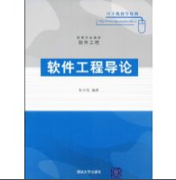
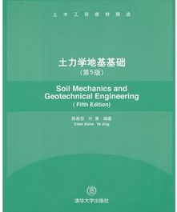
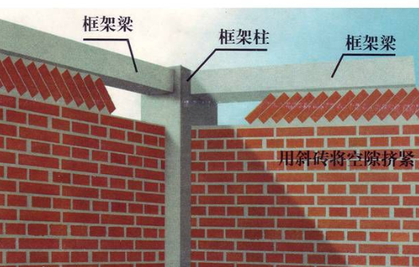
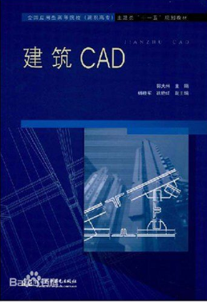

《软件工程导论》内容丰富，构思新颖，突破软件工程图书的传统框架，使整个软件工程体系更清晰，从思想和管理出发，自然延伸到流程、方法、工具和环境，重新阐释了软件工程体系。《软件工程导论》吸收了软件工程的最新进展，适应软件即服务（SaaS）的开发模式，增加了相应的内容，符合当今软件工程的实际需求
土力学主要内容包括三部分： 第一部分即前4章，是理论基础，主要内容包括地基土的物理性质、地基中的应力、变形及土的抗剪强度特性； 第二部分是工程应用，即第5~9章，包括土坡稳定、挡土墙、天然地基上浅基础、桩基础、软弱地基的设计和计算； 第三部分，即第10、11章，是工程实训及应对求职面试所应具备的基本知识和专业素质的要求。
用砖砌体、石砌体或砌块砌体建造的结构，又称砖石结构。由于砌体的抗压强度较高而抗拉强度很低，因此，砌体结构构件主要承受轴心或小偏心压力，而很少受拉或受弯，一般民用和工业建筑的墙、柱和基础都可采用砌体结构。在采用钢筋混凝土框架和其他结构的建筑中，常用砖墙做围护结构，如框架结构的填充墙
全新一代的中望CAD建筑版，是基于中望CAD+平台基础上开发的，是中望根据以往多年对勘察设计行业用户需求了解的基础上，结合中望CAD+的推出的良好平台拓展性，与主流专业软件厂商合作推出的，不仅涵盖中望CAD+的全部功能，与其他建筑CAD软件高度兼容，可完成建筑的方案设计、施工图设计等常规建筑设计工作的。建筑常用的门、窗、墙、柱、阳台、楼梯、屋顶等建筑构件，都可以创建。
标准通用标记语言下的一个应用HTML标准自1999年12月发布的HTML4.01后，后继的HTML5和其它标准被束之高阁，为了推动Web标准化运动的发展，一些公司联合起来，成立了一个叫做 Web Hypertext Application Technology Working Group （Web超文本应用技术工作组 -WHATWG） 的组织。WHATWG 致力于 Web 表单和应用程序，而W3C（World Wide Web Consortium，万维网联盟） 专注于XHTML2.0。在 2006 年，双方决定进行合作，来创建一个新版本的 HTML。